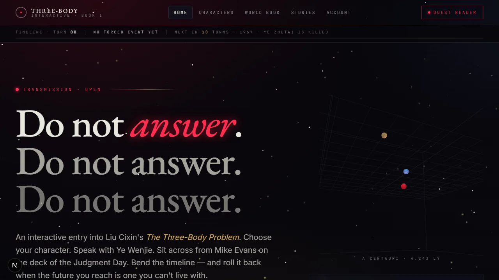

Interactive AI + systems designRead the full case study →
Three-Body reading platform
A participatory Book I experience with four perspectives, persistent cross-character memory, forced events, rewindable decisions, and a live Newtonian simulation.
4character perspectives
10turn event cadence
5turn context compaction
My work Backend architecture, LLM integration, prompt contracts, shared memory, World Book retrieval, and decision state.
Next Structured user testing and a rights-safe public demonstration mode.